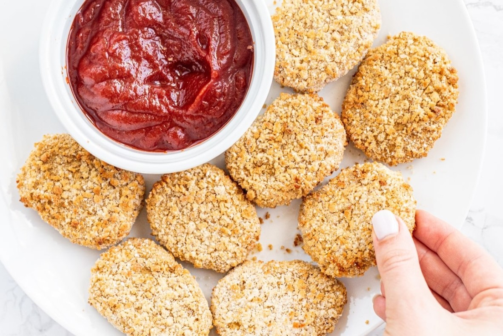

Chickpea Nuggets

These crispy chickpea nuggets will surely delight any kid or adult! Packed with protein and fiber, they are a healthy alternative to store bought chicken nuggets.
Ingredients
1 15 oz can of chickpeas drained and rinsed
1/3 block extra firm tofu
aquafaba save the chickpea liquid from the can
sprinkle of smoked paprika
1 cup breadcrumbs of choice if you are gluten-free, use GF breadcrumbs
Steps
- Drain chickpeas with a bowl under it to save the chickpea liquid or "aquafaba". Add chickpeas into the food processor with spices.
- Pulse the chickpeas, tofu, and spices together then add in the oat flour and 2 tbsp of chickpea liquid. Pulse until combined. Do not over blender - it should have texture.
- Make a prep station with a bowl of the breadcrumbs, a bowl with the remaining chickpea liquid and then a plate.
- Form the mixture into nugget shapes, dipping each one in the chickpea liquid first then the breadcrumbs. Place them all on the plate. You should get about 10-12 nuggets.
- Air-fryer method: bake for 15-20 minutes at 400 degrees flipping halfway through or until completely golden brown (this is what I did).
- Oven method: Bake on a baking sheet with parchment paper for about 30 minutes at 450 flipping halfway through or until golden brown.
- Serve fresh with ketchup or BBQ sauce and enjoy!